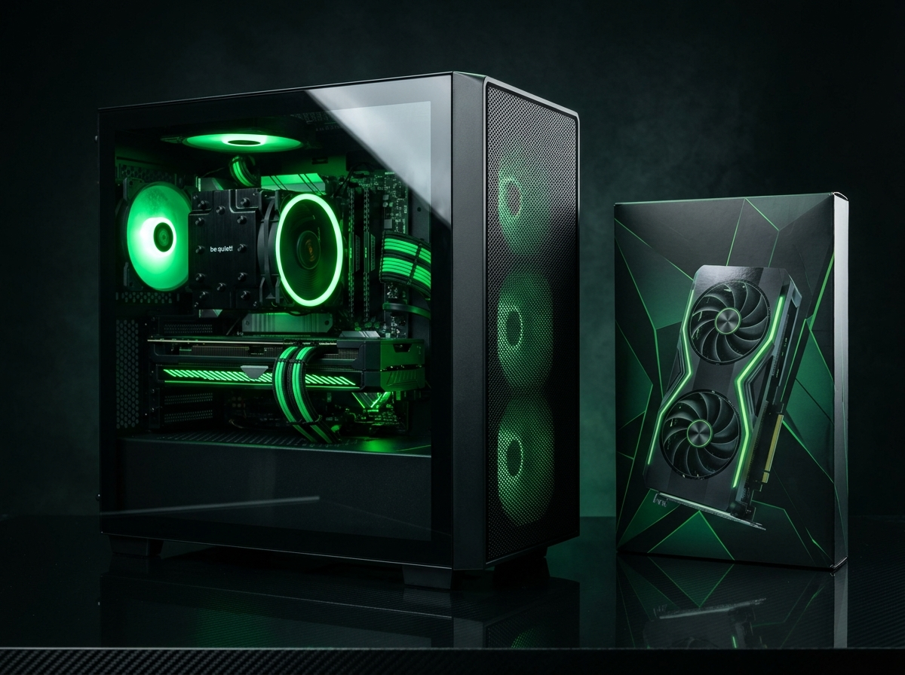

De la doctrina de Google al entorno PyME y profesional
No hace falta tener un centro de datos planetario para aplicar las lecciones de Hacking Google: autenticación multifactor resistente a phishing, mínimo privilegio en cuentas de Windows 11 y Active Directory, backups verificados fuera de línea y parcheo sistemático con herramientas como Winget reducen más del noventa por ciento de la superficie de ataque cotidiana.